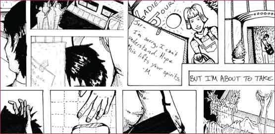

Love your neighbor; love their house. Love lost. Left somewhere between the mortar and thebrick. Artist and writer Nell Taylor offers the first of two installments of her graphic novella for this month’s issue. This web of black and white illustrations and text tells the tragic story of an architect, a preservationist, and a dilapidated (but adorable) Polish Deli.
| enter |